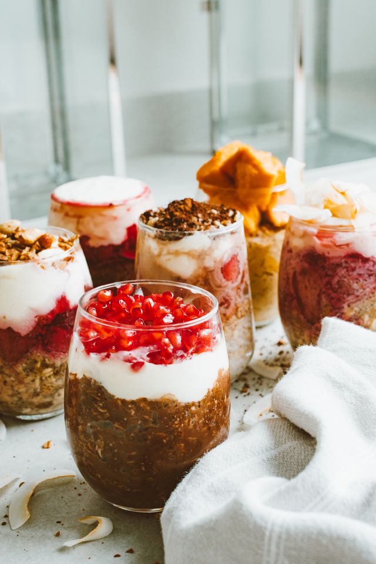

Home
Chocolate Overnight Oat

Description
A yummy breakfast that is healthy but doesn't leave you feeling deprived, these no-cook coconut
overnight oats will be creamy by morning and make breakfast prep time non-existent. Put all
ingredients in a 12-ounce mason jar and vigorously shake to make preparation a breeze!
Ingredients
- 1 cup chocolate-flavored almond milk
- ¾ cup old-fashioned rolled oats
- 1 tablespoon chia seeds
- 1 tablespoon packed shredded sweetened coconut
- 1 tablespoon maple syrup
- 1 tablespoon unsweetened cocoa powder
- 1 splash vanilla extract
Steps
- Mix almond milk, oats, chia seeds, coconut, maple syrup, cocoa powder,
and vanilla extract in a 12-ounce mason jar.
- Cover and refrigerate, 8 hours to overnight. Stir and serve cold.